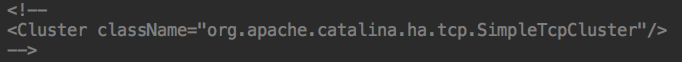
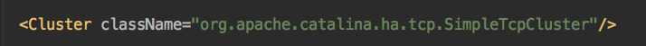

- 00 开篇词 Java程序员如何快速成长？.md.html
- 01 Web容器学习路径.md.html
- 02 HTTP协议必知必会.md.html
- 03 你应该知道的Servlet规范和Servlet容器.md.html
- 04 实战：纯手工打造和运行一个Servlet.md.html
- 05 Tomcat系统架构（上）： 连接器是如何设计的？.md.html
- 06 Tomcat系统架构（下）：聊聊多层容器的设计.md.html
- 07 Tomcat如何实现一键式启停？.md.html
- 08 Tomcat的“高层们”都负责做什么？.md.html
- 09 比较：Jetty架构特点之Connector组件.md.html
- 10 比较：Jetty架构特点之Handler组件.md.html
- 11 总结：从Tomcat和Jetty中提炼组件化设计规范.md.html
- 12 实战：优化并提高Tomcat启动速度.md.html
- 13 热点问题答疑（1）：如何学习源码？.md.html
- 14 NioEndpoint组件：Tomcat如何实现非阻塞I_O？.md.html
- 15 Nio2Endpoint组件：Tomcat如何实现异步I_O？.md.html
- 16 AprEndpoint组件：Tomcat APR提高I_O性能的秘密.md.html
- 17 Executor组件：Tomcat如何扩展Java线程池？.md.html
- 18 新特性：Tomcat如何支持WebSocket？.md.html
- 19 比较：Jetty的线程策略EatWhatYouKill.md.html
- 20 总结：Tomcat和Jetty中的对象池技术.md.html
- 21 总结：Tomcat和Jetty的高性能、高并发之道.md.html
- 22 热点问题答疑（2）：内核如何阻塞与唤醒进程？.md.html
- 23 Host容器：Tomcat如何实现热部署和热加载？.md.html
- 24 Context容器（上）：Tomcat如何打破双亲委托机制？.md.html
- 25 Context容器（中）：Tomcat如何隔离Web应用？.md.html
- 26 Context容器（下）：Tomcat如何实现Servlet规范？.md.html
- 27 新特性：Tomcat如何支持异步Servlet？.md.html
- 28 新特性：Spring Boot如何使用内嵌式的Tomcat和Jetty？.md.html
- 29 比较：Jetty如何实现具有上下文信息的责任链？.md.html
- 30 热点问题答疑（3）：Spring框架中的设计模式.md.html
- 31 Logger组件：Tomcat的日志框架及实战.md.html
- 32 Manager组件：Tomcat的Session管理机制解析.md.html
- 33 Cluster组件：Tomcat的集群通信原理.md.html
- 34 JVM GC原理及调优的基本思路.md.html
- 35 如何监控Tomcat的性能？.md.html
- 36 Tomcat I_O和线程池的并发调优.md.html
- 37 Tomcat内存溢出的原因分析及调优.md.html
- 38 Tomcat拒绝连接原因分析及网络优化.md.html
- 39 Tomcat进程占用CPU过高怎么办？.md.html
- 40 谈谈Jetty性能调优的思路.md.html
- 41 热点问题答疑（4）： Tomcat和Jetty有哪些不同？.md.html
- 特别放送 如何持续保持对学习的兴趣？.md.html
- 结束语 静下心来，品味经典.md.html
- 捐赠
33 Cluster组件：Tomcat的集群通信原理
为了支持水平扩展和高可用，Tomcat提供了集群部署的能力，但与此同时也带来了分布式系统的一个通用问题，那就是如何在集群中的多个节点之间保持数据的一致性，比如会话（Session）信息。
要实现这一点，基本上有两种方式，一种是把所有Session数据放到一台服务器或者一个数据库中，集群中的所有节点通过访问这台Session服务器来获取数据。另一种方式就是在集群中的节点间进行Session数据的同步拷贝，这里又分为两种策略：第一种是将一个节点的Session拷贝到集群中其他所有节点；第二种是只将一个节点上的Session数据拷贝到另一个备份节点。
对于Tomcat的Session管理来说，这两种方式都支持。今天我们就来看看第二种方式的实现原理，也就是Tomcat集群通信的原理和配置方法，最后通过官网上的一个例子来了解下Tomcat集群到底是如何工作的。
集群通信原理
要实现集群通信，首先要知道集群中都有哪些成员。Tomcat是通过组播（Multicast）来实现的。那什么是组播呢？为了理解组播，我先来说说什么是“单播”。网络节点之间的通信就好像是人们之间的对话一样，一个人对另外一个人说话，此时信息的接收和传递只在两个节点之间进行，比如你在收发电子邮件、浏览网页时，使用的就是单播，也就是我们熟悉的“点对点通信”。
如果一台主机需要将同一个消息发送多个主机逐个传输，效率就会比较低，于是就出现组播技术。组播是一台主机向指定的一组主机发送数据报包，组播通信的过程是这样的：每一个Tomcat节点在启动时和运行时都会周期性（默认500毫秒）发送组播心跳包，同一个集群内的节点都在相同的组播地址和端口监听这些信息；在一定的时间内（默认3秒）不发送组播报文的节点就会被认为已经崩溃了，会从集群中删去。因此通过组播，集群中每个成员都能维护一个集群成员列表。
集群通信配置
有了集群成员的列表，集群中的节点就能通过TCP连接向其他节点传输Session数据。Tomcat通过SimpleTcpCluster类来进行会话复制（In-Memory Replication）。要开启集群功能，只需要将server.xml里的这一行的注释去掉就行：

变成这样：

虽然只是简单的一行配置，但这一行配置等同于下面这样的配置，也就是说Tomcat给我们设置了很多默认参数，这些参数都跟集群通信有关。
<!--
SimpleTcpCluster是用来复制Session的组件。复制Session有同步和异步两种方式：
同步模式下，向浏览器的发送响应数据前，需要先将Session拷贝到其他节点完；
异步模式下，无需等待Session拷贝完成就可响应。异步模式更高效，但是同步模式
可靠性更高。
同步异步模式由channelSendOptions参数控制，默认值是8，为异步模式；4是同步模式。
在异步模式下，可以通过加上"拷贝确认"（Acknowledge）来提高可靠性，此时
channelSendOptions设为10
-->
<Cluster className="org.apache.catalina.ha.tcp.SimpleTcpCluster"
channelSendOptions="8">
<!--
Manager决定如何管理集群的Session信息。
Tomcat提供了两种Manager：BackupManager和DeltaManager。
BackupManager－集群下的某一节点的Session，将复制到一个备份节点。
DeltaManager－ 集群下某一节点的Session，将复制到所有其他节点。
DeltaManager是Tomcat默认的集群Manager。
expireSessionsOnShutdown－设置为true时，一个节点关闭时，
将导致集群下的所有Session失效
notifyListenersOnReplication－集群下节点间的Session复制、
删除操作，是否通知session listeners
maxInactiveInterval－集群下Session的有效时间(单位:s)。
maxInactiveInterval内未活动的Session，将被Tomcat回收。
默认值为1800(30min)
-->
<Manager className="org.apache.catalina.ha.session.DeltaManager"
expireSessionsOnShutdown="false"
notifyListenersOnReplication="true"/>
<!--
Channel是Tomcat节点之间进行通讯的工具。
Channel包括5个组件：Membership、Receiver、Sender、
Transport、Interceptor
-->
<Channel className="org.apache.catalina.tribes.group.GroupChannel">
<!--
Membership维护集群的可用节点列表。它可以检查到新增的节点，
也可以检查没有心跳的节点
className－指定Membership使用的类
address－组播地址
port－组播端口
frequency－发送心跳(向组播地址发送UDP数据包)的时间间隔(单位:ms)。
dropTime－Membership在dropTime(单位:ms)内未收到某一节点的心跳，
则将该节点从可用节点列表删除。默认值为3000。
-->
<Membership className="org.apache.catalina.tribes.membership.
McastService"
address="228.0.0.4"
port="45564"
frequency="500"
dropTime="3000"/>
<!--
Receiver用于各个节点接收其他节点发送的数据。
接收器分为两种：BioReceiver(阻塞式)、NioReceiver(非阻塞式)
className－指定Receiver使用的类
address－接收消息的地址
port－接收消息的端口
autoBind－端口的变化区间，如果port为4000，autoBind为100，
接收器将在4000-4099间取一个端口进行监听。
selectorTimeout－NioReceiver内Selector轮询的超时时间
maxThreads－线程池的最大线程数
-->
<Receiver className="org.apache.catalina.tribes.transport.nio.
NioReceiver"
address="auto"
port="4000"
autoBind="100"
selectorTimeout="5000"
maxThreads="6"/>
<!--
Sender用于向其他节点发送数据，Sender内嵌了Transport组件，
Transport真正负责发送消息。
-->
<Sender className="org.apache.catalina.tribes.transport.
ReplicationTransmitter">
<!--
Transport分为两种：bio.PooledMultiSender(阻塞式)
和nio.PooledParallelSender(非阻塞式)，PooledParallelSender
是从tcp连接池中获取连接，可以实现并行发送，即集群中的节点可以
同时向其他所有节点发送数据而互不影响。
-->
<Transport className="org.apache.catalina.tribes.
transport.nio.PooledParallelSender"/>
</Sender>
<!--
Interceptor : Cluster的拦截器
TcpFailureDetector－TcpFailureDetector可以拦截到某个节点关闭
的信息，并尝试通过TCP连接到此节点，以确保此节点真正关闭，从而更新集
群可用节点列表
-->
<Interceptor className="org.apache.catalina.tribes.group.
interceptors.TcpFailureDetector"/>
<!--
MessageDispatchInterceptor－查看Cluster组件发送消息的
方式是否设置为Channel.SEND_OPTIONS_ASYNCHRONOUS，如果是，
MessageDispatchInterceptor先将等待发送的消息进行排队，
然后将排好队的消息转给Sender。
-->
<Interceptor className="org.apache.catalina.tribes.group.
interceptors.MessageDispatchInterceptor"/>
</Channel>
<!--
Valve : Tomcat的拦截器，
ReplicationValve－在处理请求前后打日志；过滤不涉及Session变化的请求。
-->
<Valve className="org.apache.catalina.ha.tcp.ReplicationValve"
filter=""/>
<Valve className="org.apache.catalina.ha.session.
JvmRouteBinderValve"/>
<!--
Deployer用于集群的farm功能，监控应用中文件的更新，以保证集群中所有节点
应用的一致性，如某个用户上传文件到集群中某个节点的应用程序目录下，Deployer
会监测到这一操作并把文件拷贝到集群中其他节点相同应用的对应目录下以保持
所有应用的一致，这是一个相当强大的功能。
-->
<Deployer className="org.apache.catalina.ha.deploy.FarmWarDeployer"
tempDir="/tmp/war-temp/"
deployDir="/tmp/war-deploy/"
watchDir="/tmp/war-listen/"
watchEnabled="false"/>
<!--
ClusterListener : 监听器，监听Cluster组件接收的消息
使用DeltaManager时，Cluster接收的信息通过ClusterSessionListener
传递给DeltaManager，从而更新自己的Session列表。
-->
<ClusterListener className="org.apache.catalina.ha.session.
ClusterSessionListener"/>
</Cluster>
从上面的的参数列表可以看到，默认情况下Session管理组件DeltaManager会在节点之间拷贝Session，DeltaManager采用的一种all-to-all的工作方式，即集群中的节点会把Session数据向所有其他节点拷贝，而不管其他节点是否部署了当前应用。当集群节点数比较少时，比如少于4个，这种all-to-all的方式是不错的选择；但是当集群中的节点数量比较多时，数据拷贝的开销成指数级增长，这种情况下可以考虑BackupManager，BackupManager只向一个备份节点拷贝数据。
在大体了解了Tomcat集群实现模型后，就可以对集群作出更优化的配置了。Tomcat推荐了一套配置，使用了比DeltaManager更高效的BackupManager，并且通过ReplicationValve设置了请求过滤。
这里还请注意在一台服务器部署多个节点时需要修改Receiver的侦听端口，另外为了在节点间高效地拷贝数据，所有Tomcat节点最好采用相同的配置，具体配置如下：
<Cluster className="org.apache.catalina.ha.tcp.SimpleTcpCluster"
channelSendOptions="6">
<Manager className="org.apache.catalina.ha.session.BackupManager"
expireSessionsOnShutdown="false"
notifyListenersOnReplication="true"
mapSendOptions="6"/>
<Channel className="org.apache.catalina.tribes.group.
GroupChannel">
<Membership className="org.apache.catalina.tribes.membership.
McastService"
address="228.0.0.4"
port="45564"
frequency="500"
dropTime="3000"/>
<Receiver className="org.apache.catalina.tribes.transport.nio.
NioReceiver"
address="auto"
port="5000"
selectorTimeout="100"
maxThreads="6"/>
<Sender className="org.apache.catalina.tribes.transport.
ReplicationTransmitter">
<Transport className="org.apache.catalina.tribes.transport.
nio.PooledParallelSender"/>
</Sender>
<Interceptor className="org.apache.catalina.tribes.group.
interceptors.TcpFailureDetector"/>
<Interceptor className="org.apache.catalina.tribes.group.
interceptors.MessageDispatchInterceptor"/>
<Interceptor className="org.apache.catalina.tribes.group.
interceptors.ThroughputInterceptor"/>
</Channel>
<Valve className="org.apache.catalina.ha.tcp.ReplicationValve"
filter=".*\.gif|.*\.js|.*\.jpeg|.*\.jpg|.*\.png|.*\
.htm|.*\.html|.*\.css|.*\.txt"/>
<Deployer className="org.apache.catalina.ha.deploy.FarmWarDeployer"
tempDir="/tmp/war-temp/"
deployDir="/tmp/war-deploy/"
watchDir="/tmp/war-listen/"
watchEnabled="false"/>
<ClusterListener className="org.apache.catalina.ha.session.
ClusterSessionListener"/>
</Cluster>
集群工作过程
Tomcat的官网给出了一个例子，来说明Tomcat集群模式下是如何工作的，以及Tomcat集群是如何实现高可用的。比如集群由Tomcat A和Tomcat B两个Tomcat实例组成，按照时间先后顺序发生了如下事件：
1. Tomcat A启动
Tomcat A启动过程中，当Host对象被创建时，一个Cluster组件（默认是SimpleTcpCluster）被关联到这个Host对象。当某个应用在web.xml中设置了Distributable时，Tomcat将为此应用的上下文环境创建一个DeltaManager。SimpleTcpCluster启动Membership服务和Replication服务。
2. Tomcat B启动（在Tomcat A之后启动）
首先Tomcat B会执行和Tomcat A一样的操作，然后SimpleTcpCluster会建立一个由Tomcat A和Tomcat B组成的Membership。接着Tomcat B向集群中的Tomcat A请求Session数据，如果Tomcat A没有响应Tomcat B的拷贝请求，Tomcat B会在60秒后time out。在Session数据拷贝完成之前Tomcat B不会接收浏览器的请求。
3. Tomcat A接收HTTP请求，创建Session 1
Tomcat A响应客户请求，在把结果发送回客户端之前，ReplicationValve会拦截当前请求（如果Filter中配置了不需拦截的请求类型，这一步就不会进行，默认配置下拦截所有请求），如果发现当前请求更新了Session，就调用Replication服务建立TCP连接将Session拷贝到Membership列表中的其他节点即Tomcat B。在拷贝时，所有保存在当前Session中的可序列化的对象都会被拷贝，而不仅仅是发生更新的部分。
4. Tomcat A崩溃
当Tomcat A崩溃时，Tomcat B会被告知Tomcat A已从集群中退出，然后Tomcat B就会把Tomcat A从自己的Membership列表中删除。并且Tomcat B的Session更新时不再往Tomcat A拷贝，同时负载均衡器会把后续的HTTP请求全部转发给Tomcat B。在此过程中所有的Session数据不会丢失。
5. Tomcat B接收Tomcat A的请求
Tomcat B正常响应本应该发往Tomcat A的请求，因为Tomcat B保存了Tomcat A的所有Session数据。
6. Tomcat A重新启动
Tomcat A按步骤1、2操作启动，加入集群，并从Tomcat B拷贝所有Session数据，拷贝完成后开始接收请求。
7. Tomcat A接收请求，Session 1被用户注销
Tomcat继续接收发往Tomcat A的请求，Session 1设置为失效。请注意这里的失效并非因为Tomcat A处于非活动状态超过设置的时间，而是应用程序执行了注销的操作（比如用户登出）而引起的Session失效。这时Tomcat A向Tomcat B发送一个Session 1 Expired的消息，Tomcat B收到消息后也会把Session 1设置为失效。
8. Tomcat B接收到一个新请求，创建Session 2
同理这个新的Session也会被拷贝到Tomcat A。
9. Tomcat A上的Session 2过期
因超时原因引起的Session失效Tomcat A无需通知Tomcat B，Tomcat B同样知道Session 2已经超时。因此对于Tomcat集群有一点非常重要，所有节点的操作系统时间必须一致。不然会出现某个节点Session已过期而在另一节点此Session仍处于活动状态的现象。
本期精华
今天我谈了Tomcat的集群工作原理和配置方式，还通过官网上的一个例子说明了Tomcat集群的工作过程。Tomcat集群对Session的拷贝支持两种方式：DeltaManager和BackupManager。
当集群中节点比较少时，可以采用DeltaManager，因为Session数据在集群中各个节点都有备份，任何一个节点崩溃都不会对整体造成影响，可靠性比较高。
当集群中节点数比较多时，可以采用BackupManager，这是因为一个节点的Session只会拷贝到另一个节点，数据拷贝的开销比较少，同时只要这两个节点不同时崩溃，Session数据就不会丢失。
课后思考
在Tomcat官方推荐的配置里，ReplicationValve被配置成下面这样：
<Valve className="org.apache.catalina.ha.tcp.ReplicationValve"
filter=".*\.gif|.*\.js|.*\.jpeg|.*\.jpg|.*\.png|.*\
.htm|.*\.html|.*\.css|.*\.txt"/>
你是否注意到，filter的值是一些JS文件或者图片等，这是为什么呢？
不知道今天的内容你消化得如何？如果还有疑问，请大胆的在留言区提问，也欢迎你把你的课后思考和心得记录下来，与我和其他同学一起讨论。如果你觉得今天有所收获，欢迎你把它分享给你的朋友。
© 2019 - 2023 Liangliang Lee. Powered by gin and hexo-theme-book.